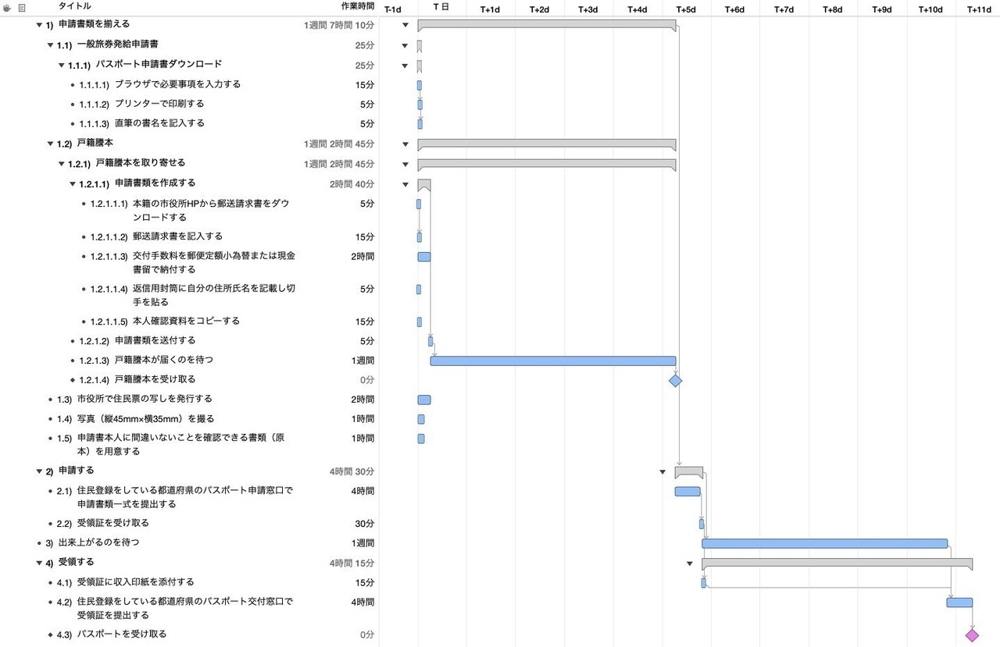
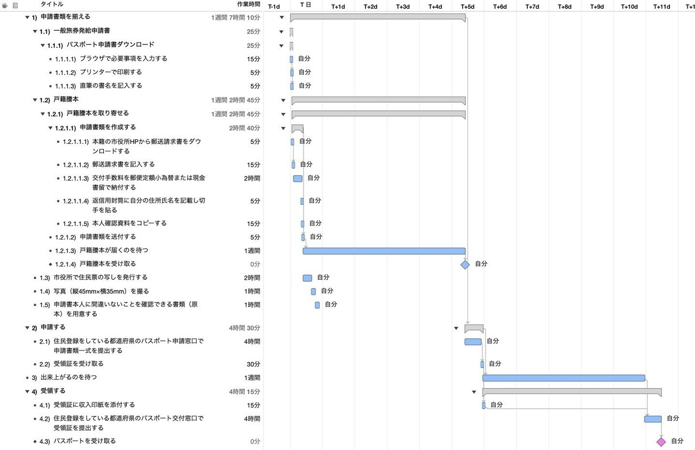

パスポートを作成するWBSを作ってみた
今回は「WBSで覗いてみた」として、「パスポートを作成するWBS」を作成しました。パスポートの申請から受取までの手続きについて、何にどれくらいの時間がかかるのか、なぜ手間に感じるのかをWBSを通じて詳しく検証していきます。
※そもそも「WBSとは何か？」について詳しく知りたい方は、こちらの記事「WBSの勘所」も合わせてご覧ください。
1. パスポート取得プロジェクトのWBSを作る
まずはパスポート取得に必要な手続きや工程を参考に、完成までの全作業をWBSに分解してみます。
今回参考にしたのは、外務省の公式Webサイトで案内されているパスポートの発行手続き手順です。
書類の準備から申請窓口への提出、発行待ち、受取までの工程を洗い出したWBSがこちらです。

担当者を特定の人員に割り当てず、並行して進められる作業を最大限に考慮した状態では、延べ11日間の工期となることが分かります。これが本プロジェクトにおける理論上の最短納期ラインです。
2. 全ての作業を自分自身に割り当ててみる
次に、すべての作業を自分自身に割り当ててリソースの平準化を行ってみます。

ご覧の通り、すべての作業を自分1人で担当しても、全体の工期は11日間のまま変わりません。
通常、1人の作業者にタスクを集中させると作業が直列化して工期が延びますが、パスポート取得の場合は「申請後の発行待ち（審査・作成期間）」といった外部要因による待ち時間が工程の大半を占めています。
実際の自己作業時間よりも「待つ時間」の方が圧倒的に長いため、どれほど効率的に作業を進めても全体のスケジュールを短縮できない構造になっています。パスポート取得が「面倒・時間がかかる」と感じられる背景には、こうした工期の性質があることが分かります。
終わりに
身近な手続きであっても、WBSに落とし込んで作業の流れや依存関係を可視化することで、「なぜ時間がかかるのか」「どこがボトルネックなのか」を論理的に把握することができます。
WBSはプロジェクトの構造化と見通しを向上させる強力なツールです。今回の検証が、日常の業務やプロジェクト計画におけるスケジュール設計のヒントになれば幸いです。
なお、プロジェクト計画の基礎となるWBSの作り方や平準化の考え方については、「WBSの勘所」や「ガントチャートの決め手は平準化」でも詳しく解説していますので、ぜひ合わせてご覧ください。
最後までお読みいただきありがとうございました。